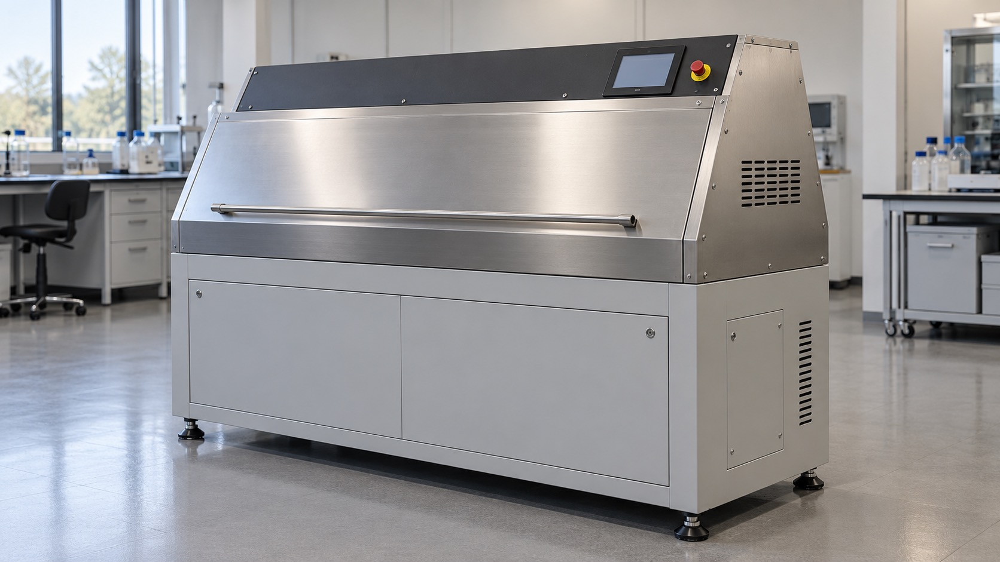
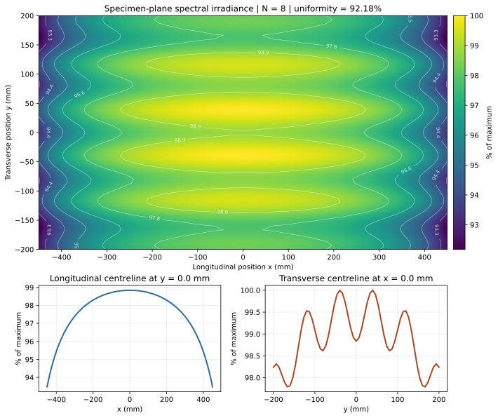
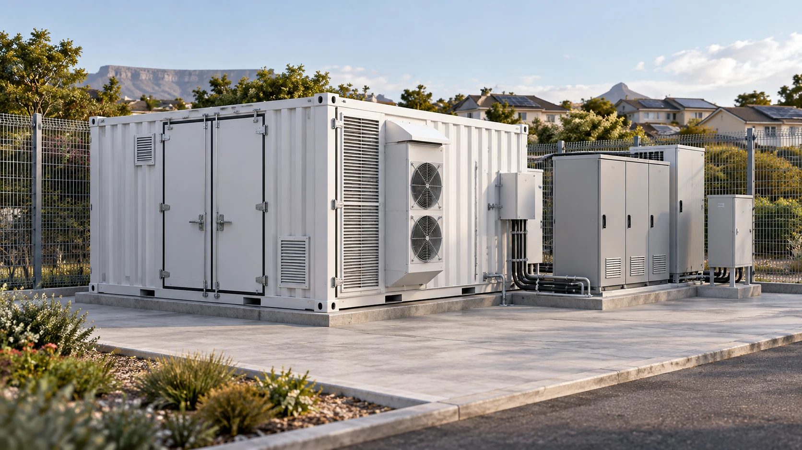
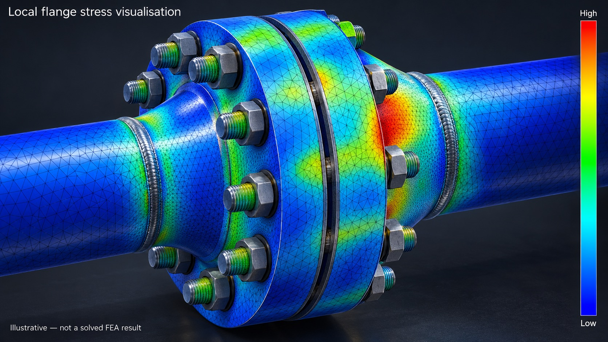
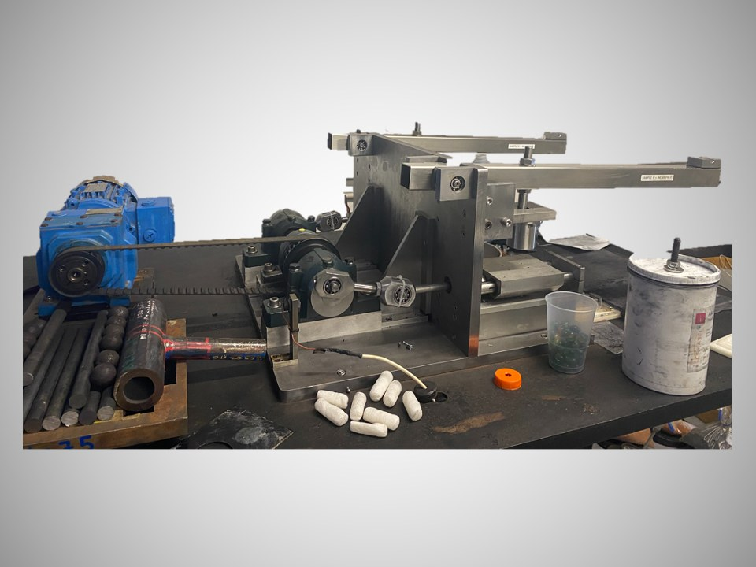

Materials testing · Engineering
Ultraviolet ageing chamber
Design & planningA chamber concept for controlled UV, heat and condensation exposure, developed from a laboratory service need.
Requirements · Subsystem design · Test planning
Explore my world through projects
I bring curiosity, analytical thinking and a practical approach to mechanical engineering. Explore my design, modelling and software projects, together with the learning and deliverables behind them.
7 projects
Explore recent engineering and software work alongside my earlier design projects. Each new project notebook includes goals, technical learning, soft skills, detailed updates and deliverables.

Materials testing · Engineering
A chamber concept for controlled UV, heat and condensation exposure, developed from a laboratory service need.
Requirements · Subsystem design · Test planning

Simulation tools · Engineering & software
A Python tool connecting lamp geometry, irradiance distribution, spectral data and reproducible design comparisons.
Python · Numerical modelling · Data visualisation

Energy systems · Software
A time-series pipeline comparing solar production, residential demand and battery scenarios with explicit data assumptions.
Energy systems · Time-series data · Battery simulation

Mechanical analysis · Engineering
A global and local FEA study of thermal loading, support conditions and bolted-flange response.
Finite element analysis · Model verification · Technical reporting

Mechanical design · Engineering
A rotary peristaltic pump designed to dispense or infuse fluids accurately for veterinary use while maintaining sterility, reliability and ease of use.
System design · Mechanical analysis · Gearbox sizing

Mechanism analysis · Engineering
Design and analysis of a bi-stable clamp valve for precise, energy-efficient flow control in a next-generation embedded 3D printer.
Mechanical systems analysis · Computational modelling

Experimental rigs · Engineering & software
Repairing failed mechanical components, replacing the legacy electronics with an Arduino-based control and data logging system, and reducing vibration so the tester produces reliable results.
Mechanical restoration · Embedded integration · Vibration analysis
Try a different topic or clear the filters to see every project.
A snapshot of the engineering tools, methods, and technologies I work with regularly.
Want to collaborate or chat about my work? Reach out via email or LinkedIn.